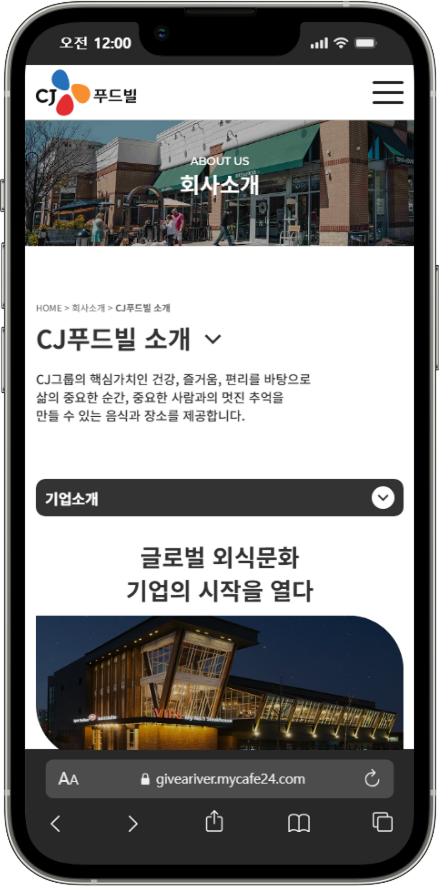
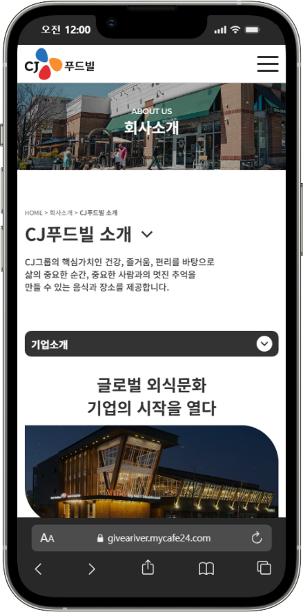
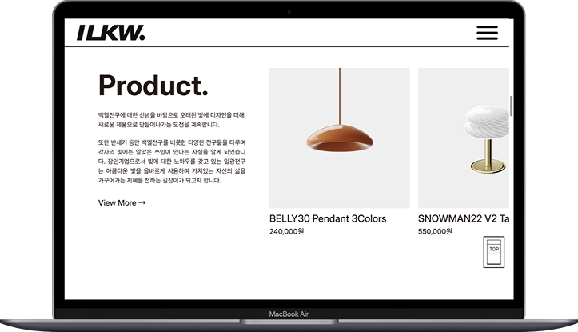
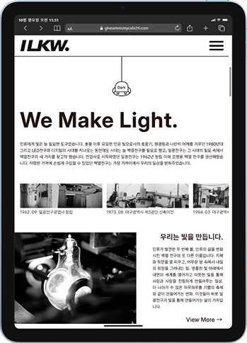
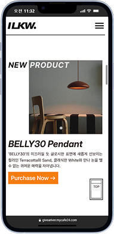

주도적인 생각,
호감가는 디자인
웹디자이너 주호 입니다.
주도적인 생각,
호감가는 디자인
더 나은 결과를 위해
고민하고 움직이는
웹 디자이너 & 퍼블리셔
강주호입니다.
WEB
DESIGN
PUBLISHING
PORTFOLIO, 2025
Profile
안녕하세요.
언제나 더 나은 결과물을 위해
고민하고 움직이는 웹 디자이너 & 웹 퍼블리셔
강주호입니다.
- Contact.
- Tel. 010-4062-5065
- Email. giveariver@naver.com
- Education.
- 2025.05 - 2025.10 그린컴퓨터아트학원
- 2021.03 - 2025.02 계원예술대학교 산업디자인과
- Experience
- 국립국악원 캐릭터 디자인 (별주부전)
- Skills.
-


- · HTML5 이전 방식으로 제작된 CJ푸드빌 웹사이트를 주제로 한 프로젝트
- · 소극적인 비주얼 활용과 올드한 UI 개선
- · W3C 웹표준 및 웹접근성 검사 통과
- · 다양한 브라우저 환경에서의 호환성 테스트 완료 (크로스브라우징)
- · php include를 활용하여 header, footer 코드의 재사용성과 유지보수의 편의성을 높임
- · Ajax와 Json을 활용하여 검색 기능 구현
- · nav영역을 한눈에 볼 수 있도록 jQuery를 사용해 Dropdown 기능 구현
- · JavaScript를 활용하여 다양한 이벤트 구현(아코디언, 탭 메뉴, 슬라이드 등)
- Info
- · 제작기간: 1개월
- · 제작인원: 1인
- Color
- #EF151E
- #FF9700
- #006ECD
- Font
- · Noto Sans KR
- · Montserrat
- Skills
- · HTML5, CSS3, JavaScript, jQuery, Ajax, Json, 그누보드 게시판
- · Figma, Adobe Illustrator
- · W3C 웹 표준 통합 마크업 검사(html5/css3), 웹 접근성검사 (K-WAH)
 

- · 구현한 기업형 PC 웹을 모바일 환경에 적합한 UI로 새롭게 구현한 모바일 웹사이트
- · 모바일 환경에 맞춰 터치 이벤트를 중심으로 구성
- · PC버전보다 간략화된 컨텐츠와 메뉴
- · W3C 웹표준 및 웹접근성 검사 통과
- · 모바일 대표 기기별 테스트 완료
- · Media Query와 JavaScript를 활용하여 해상도별 이미지 최적화
- · gnb 영역에 햄버거 메뉴를 배치하고 아코디언 기능을 적용
- · swiper 슬라이더 플러그인 적용
- Info
- · 제작기간: 약 2주
- · 제작인원: 1인
- Color
- #EF151E
- #FF9700
- #006ECD
- Font
- · Noto Sans KR
- · Montserrat
- Skills
- · HTML5, CSS3, JavaScript, jQuery, Ajax, Json, Media Query
- · Figma, Adobe Illustrator
- · W3C 웹 표준 통합 마크업 검사(html5/css3), 웹 접근성검사 (K-WAH)




- · 전구회사 '일광전구'를 주제로 반응형 웹사이트 프로젝트
- · W3C 웹표준 및 웹접근성 검사 통과
- · 다양한 기기별 환경에서 호환성 테스트 완료
- · Media Query를 활용해 디바이스별 해상도에 최적화된 UI 설계
- · 다크모드를 지원하여 사용자 편의성을 높힘
- · Flex와 Grid를 사용하여 해상도에 따라 변화하는 레이아웃 적용
- · Ajax와 Json을 활용하여 검색 기능, 제품 카테고리 필터링 구현
- · Magnific Popup 플러그인을 사용하여 영상이 페이지 내부에 팝업되어 재생되게 구현
- Info
- · 제작기간: 약 2주
- · 제작인원: 1인
- Color
- #221715
- #ADADAD
- #F67C0D
- Font
- · Asta Sans
- · Inter
- Skills
- · HTML5, CSS3, JavaScript, jQuery, Ajax, Json, Media Query
- · Figma, Adobe Illustrator, Adobe Premiere Pro
- · W3C 웹 표준 통합 마크업 검사(html5/css3), 웹 접근성검사 (K-WAH)